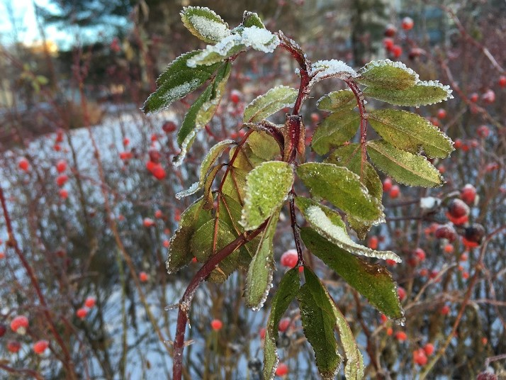
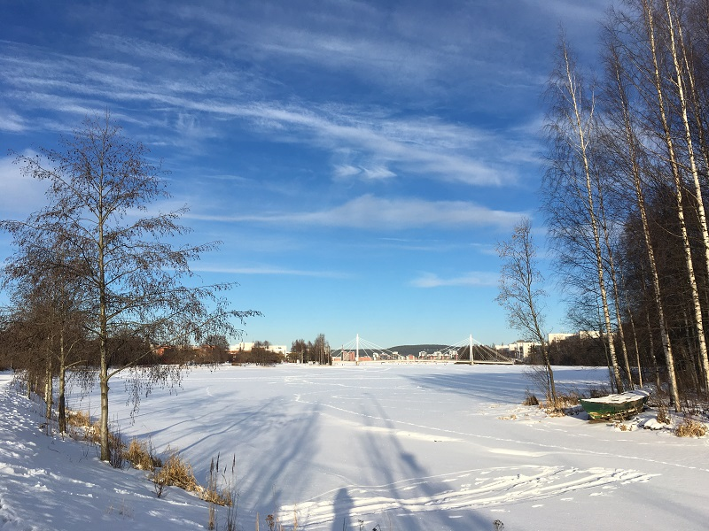
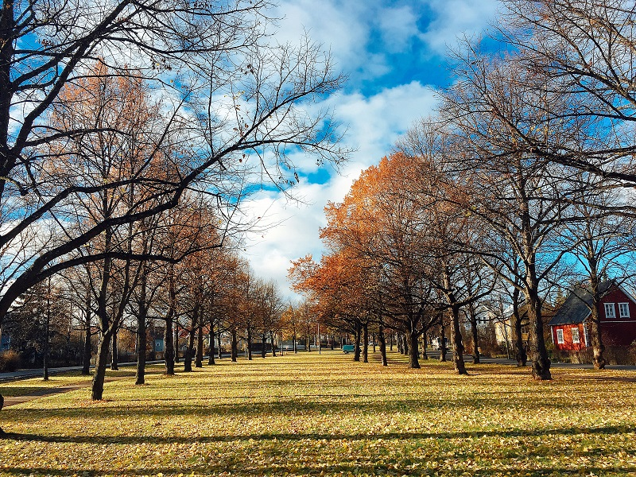
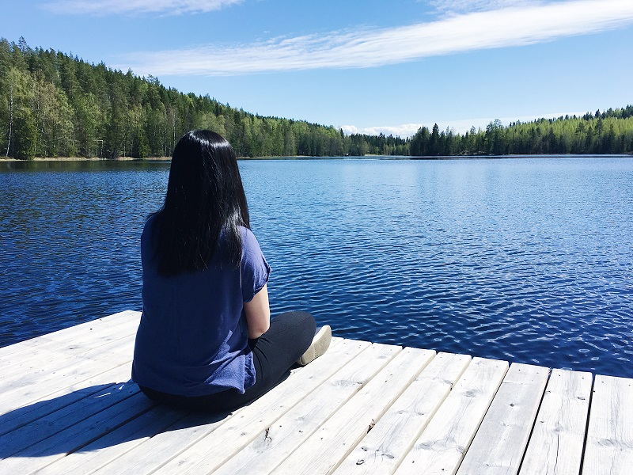
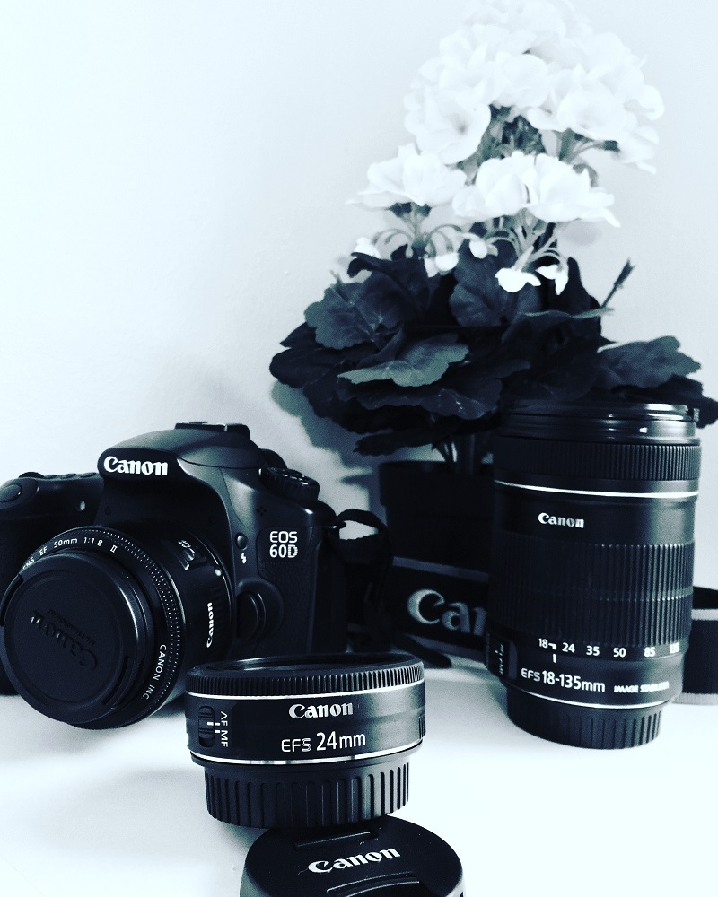

Sisu culture
To the Finnish people, sisu has a mystical, almost magical meaning. Sisu is a unique Finnish concept. It is a Finnish term that can be roughly translated into English as strength of will, determination, perseverance, and acting rationally in the face of adversity. Sisu is an inherent characteristic of the Finnish people. You might call it backbone, spunk, stamina, guts, or drive and perseverance. It is a measure of integrity that surpasses the hardship and sees through to the end.
continue reading

July 16, 2021 | 10 comments
White winter and x-mas
During January and February, there is almost always snow in northern and eastern Finland. Even if there’s little snow in Helsinki, there’s often up to a metre or more on the skiing slopes of Lapland. The snow season in northern Finland begins in November and lasts at least until May. In the inland regions of southern and central Finland, the first snow falls at the beginning of December and melts during late March and April.
continue reading

July 15, 2021 | 10 comments
Colorful Autumn
The most visible sign of the approaching autumn in Finland is the vibrant colours of the foliage. ‘Ruska’, as we call it in Finnish. During this relatively short period, you can spot all the colours of a rainbow at one glance. Imagine standing by a blue lake while the autumn sun reflects all the reds, yellows, oranges and whatever is left of the green on the surface of the water. The air feels fresh, and the last warm rays of sunshine are gently touching your face.
continue reading

July 14, 2021 | 8 comments
Sunshine summer
Because of the long, cold winter Finns celebrate their summer very passionately. Some go to music festivals, offering a choice of jazz, blues, rock, opera and chamber music. Others are sailing among the coastal islands or enjoying slow life at their summer cottages – swimming, fishing and cooking dinner on the grill. For three brief – but oh, so sweet! – months, the temperatures soar high and the sun does not set at all.
continue reading

July 10, 2021 | 10 comments
Finnish personal space
That's not to say Finns aren't friendly. Spend an evening ripping on Sweden in the company of a Finn with a belly full of beer, and you'll make a friend for life. Finns don't demand personal space because they are aloof or shy; they're simply comfortable with space because their native land is full of it. Finland ranks third in Europe when it comes to population sparsity, and the nation is decorated with a whopping 22 billion trees – that's 4,500 trees for every one person.
continue reading

July 6, 2021 | 10 comments